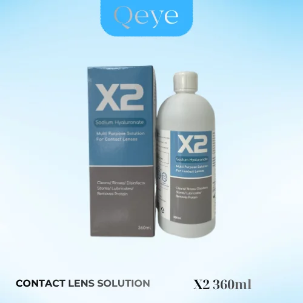

Nước ngâm lens mua hãng nào tốt nhất? Hướng dẫn chọn và sử dụng đúng cách


Nước ngâm lens là thứ người đeo kính áp tròng dùng mỗi ngày, nhưng lại ít ai để ý chọn kỹ. Một chai dung dịch bảo quản kính áp tròng tốt giúp lens sạch, mềm, đeo êm và bảo vệ đôi mắt khỏi vi khuẩn. Bài viết này giúp bạn biết nên mua nước ngâm lens hãng nào, cách phân biệt sản phẩm tốt và hướng dẫn sử dụng nước ngâm lens đúng cách.
Nước ngâm lens là gì, vì sao bắt buộc phải có
Nước ngâm lens (còn gọi là nước ngâm kính áp tròng hay dung dịch bảo quản kính áp tròng) là dung dịch chuyên dụng dùng để rửa, làm sạch, khử khuẩn và giữ ẩm cho lens trong thời gian không đeo. Mỗi ngày đeo lens, bề mặt kính bám protein từ nước mắt, bụi, bã nhờn và vi khuẩn. Nếu không được ngâm đúng dung dịch, lens nhanh bị đục, khô cứng, gây cộm và làm tăng nguy cơ viêm nhiễm mắt.
Hiện nay hầu hết nước ngâm lens trên thị trường là loại đa năng: một chai dùng được cho cả bước rửa, ngâm và bảo quản. Loại này tiện lợi, phù hợp với lens màu, lens cận, lens trong suốt dùng 1 tháng đến 12 tháng.
Tuyệt đối không ngâm lens bằng nước máy, nước lọc, nước muối tự pha hay nước bọt. Những loại nước này không khử khuẩn được và có thể chứa vi sinh vật gây viêm giác mạc nguy hiểm.
Tiêu chí chọn nước ngâm lens tốt
Trước khi tìm hiểu nước ngâm lens hãng nào tốt nhất, bạn nên nắm vài tiêu chí để tự đánh giá một chai dung dịch bảo quản kính áp tròng:
- Có thương hiệu, nguồn gốc rõ ràng: bao bì có tên hãng, xuất xứ, hạn sử dụng, số lô và hướng dẫn sử dụng tiếng Việt. Tránh hàng trôi nổi, chiết lẻ không nhãn.
- Đa năng, dịu nhẹ: vừa làm sạch, khử khuẩn vừa giữ ẩm, không gây cay xè khi đeo lens lên mắt.
- Giữ lens mềm và trong: lens sau khi ngâm phải mềm, ẩm, không bị khô cứng hay bám cặn.
- Dung tích phù hợp: chai nhỏ tiện mang đi du lịch, chai lớn tiết kiệm khi dùng hằng ngày. Nên dùng hết trong thời gian khuyến nghị sau khi mở nắp.
- Mua tại nơi uy tín: cửa hàng kính, đại lý chính hãng có thể tư vấn cách dùng và đổi sản phẩm nếu lỗi từ nhà sản xuất.
Nước ngâm lens mua hãng nào tốt nhất?
Trong rất nhiều thương hiệu, Qeye Care và X2 là hai dòng nước ngâm lens có thương hiệu rõ ràng, xuất xứ Hàn Quốc, được hệ thống cửa hàng và đại lý Qeye Lens lựa chọn phân phối vì chất lượng ổn định và giá hợp lý.
Nước ngâm lens Qeye Care
Qeye Care là dung dịch bảo quản kính áp tròng đa năng, giúp làm sạch và giữ lens ẩm mềm trong thời gian bảo quản. Sản phẩm đi cùng thương hiệu lens Qeye nên rất phù hợp khi bạn đang đeo lens màu, lens cận hay lens trong suốt của Qeye Lens. Qeye Care có 2 dung tích:
- Qeye Care 140ml: nhỏ gọn, dễ bỏ túi xách, hợp khi đi du lịch, công tác hoặc người mới tập đeo lens.
- Qeye Care 360ml: chai lớn tiết kiệm, phù hợp người đeo lens hằng ngày.
Nước ngâm lens X2 Multiplus Solution
X2 Multiplus Solution là dòng nước ngâm lens cao cấp xuất xứ Hàn Quốc, dung tích 360ml, dùng để ngâm và bảo quản lens hằng ngày. X2 được nhiều người đeo lens lâu năm tin dùng vì cảm giác lens mềm, êm khi đeo lại vào buổi sáng.
Nước ngâm lensQeye Care 140ml / 360mlHàn Quốc · 2 dung tích70.000đ - 120.000đ / chai
Nước ngâm lens cao cấpX2 Multiplus 360mlHàn Quốc · Dòng cao cấp150.000đ / chai
So sánh nhanh Qeye Care và X2
| Tiêu chí | Qeye Care | X2 Multiplus Solution |
|---|---|---|
| Xuất xứ | Hàn Quốc | Hàn Quốc |
| Dung tích | 140ml và 360ml | 360ml |
| Công dụng | Rửa, làm sạch, giữ ẩm lens khi bảo quản | Ngâm, bảo quản lens hằng ngày |
| Thời gian dùng sau mở nắp | Khoảng 3 tháng | Khoảng 3 tháng |
| Giá tham khảo | 70.000đ (140ml), 120.000đ (360ml) | 150.000đ |
| Phù hợp với | Người mới đeo lens, cần chai nhỏ mang theo hoặc muốn tiết kiệm | Người đeo lens hằng ngày, muốn dòng cao cấp |
Tóm lại: nếu bạn cần một chai nước ngâm lens chính hãng, giá tốt và có size nhỏ để mang theo, hãy chọn Qeye Care. Nếu bạn đeo lens thường xuyên và muốn trải nghiệm dòng cao cấp hơn, X2 là lựa chọn rất đáng cân nhắc.
Hướng dẫn sử dụng nước ngâm lens đúng cách
Dù dùng nước ngâm kính áp tròng của hãng nào, bạn cũng nên làm theo các bước sau để lens luôn sạch và an toàn:
- Rửa tay sạch bằng xà phòng, lau khô bằng khăn không xơ trước khi chạm vào lens.
- Tháo lens và đặt vào lòng bàn tay, nhỏ vài giọt nước ngâm lên bề mặt lens.
- Chà nhẹ lens bằng đầu ngón tay theo hướng từ tâm ra mép khoảng 10 đến 20 giây cho mỗi mặt để loại bỏ cặn bám.
- Tráng lại lens bằng chính nước ngâm lens, không dùng nước máy.
- Đổ nước ngâm mới vào khay đựng lens sao cho ngập hoàn toàn lens. Không dùng lại nước ngâm cũ và không đổ thêm nước mới lên nước cũ.
- Đậy kín khay và ngâm tối thiểu 4 đến 6 tiếng (hoặc theo hướng dẫn trên bao bì) trước khi đeo lại.
- Vệ sinh khay lens sau mỗi lần đeo: đổ bỏ nước cũ, tráng bằng nước ngâm, úp khay cho khô tự nhiên. Nên thay khay đựng lens mới khoảng 1 đến 3 tháng một lần.
Những sai lầm thường gặp khi dùng nước ngâm lens
- Dùng lại nước ngâm đã qua sử dụng hoặc chỉ đổ thêm cho đầy khay.
- Dùng nước muối sinh lý thay cho nước ngâm lens. Nước muối chỉ để tráng, không có khả năng khử khuẩn và bảo quản.
- Để đầu chai chạm vào tay, khay hay lens khiến dung dịch bị nhiễm bẩn.
- Dùng chai nước ngâm đã mở nắp quá lâu hoặc đã hết hạn.
- Nhỏ nước ngâm lens trực tiếp vào mắt. Nước ngâm dùng cho lens, khi mắt khô hãy dùng nước nhỏ mắt dành cho người đeo lens.
Mua nước ngâm lens chính hãng ở đâu
Nước ngâm lens Qeye Care và X2 chính hãng có tại hệ thống cửa hàng và đại lý Qeye Lens trên toàn quốc. Bạn có thể ghé cửa hàng gần nhất để được tư vấn cách vệ sinh lens, hoặc đặt online và nhận hàng tận nơi. Xem thêm các sản phẩm nước ngâm, nước nhỏ mắt và phụ kiện lens trên trang chủ.
Đại lý, cửa hàng muốn nhập sỉ nước ngâm lens vui lòng liên hệ Zalo 0906 629 366 hoặc xem chính sách đại lý.
Câu hỏi thường gặp
Nước ngâm lens hãng nào tốt nhất?
Qeye Care và X2 Multiplus Solution là hai dòng nước ngâm lens có thương hiệu, xuất xứ Hàn Quốc, được nhiều người đeo lens tin dùng. Qeye Care có size 140ml và 360ml giá tốt, X2 là dòng cao cấp 360ml.
Có thể dùng nước muối sinh lý thay nước ngâm lens không?
Không nên. Nước muối sinh lý chỉ dùng để tráng, không có khả năng khử khuẩn và giữ ẩm cho lens như dung dịch bảo quản kính áp tròng chuyên dụng.
Nước ngâm kính áp tròng dùng được bao lâu sau khi mở nắp?
Với Qeye Care và X2, bạn nên dùng hết trong khoảng 3 tháng sau khi mở nắp. Luôn kiểm tra hạn sử dụng in trên bao bì.
Bao lâu thì thay nước ngâm lens trong khay một lần?
Thay nước mới sau mỗi lần tháo lens. Nếu không đeo lens nhiều ngày, nên thay nước ngâm khoảng 2 đến 3 ngày một lần.
Mua nước ngâm lens Qeye Care, X2 ở đâu?
Sản phẩm có tại hệ thống cửa hàng và đại lý Qeye Lens toàn quốc. Gọi hoặc nhắn Zalo 0906 629 366 để được tư vấn và đặt hàng.
Lens áp tròng là thiết bị y tế. Nội dung chỉ mang tính tham khảo, không thay thế tư vấn của chuyên viên nhãn khoa & nhãn kính. Hãy đọc kỹ hướng dẫn trên bao bì trước khi dùng.